פשוט להצליח במתמטיקה › כל הנושאים › הסתברות
הסתברות – סרטוני הסבר ותרגול
74 סרטוני הסבר ותרגול בנושא הסתברות – לכיתה ז׳, כיתה ח׳, כיתה ט׳, שאלון 471, שאלון 571. כל נושא מוסבר מהקל אל הקשה: קודם הרעיון, אחר כך תרגילים, ובסוף שאלות בסגנון בגרות. הכול בחינם, בשיטת "פשוט להצליח".
רוצים לעקוב אחרי ההתקדמות?נרשמים בחינם, וכל סרטון שראיתם מסומן ✓. ממשיכים מכל מכשיר.
הצטרפות בחינם ←הסתברות – כיתה ז׳ כל הנושאים של כיתה ז׳ ←
הסתברות – כיתה ח׳ כל הנושאים של כיתה ח׳ ←
הסתברות – כיתה ט׳ כל הנושאים של כיתה ט׳ ←
 הסתברות בסיסית – בחירה אקראית, קובייה ובולים במעטפה
הסתברות בסיסית – בחירה אקראית, קובייה ובולים במעטפה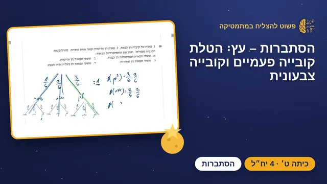
הסתברות – עץ꞉ הטלת קובייה פעמיים וקובייה צבעונית הסתברות – עץ꞉ בנים ובנות, מטבעות עם החזרה
הסתברות – עץ꞉ בנים ובנות, מטבעות עם החזרה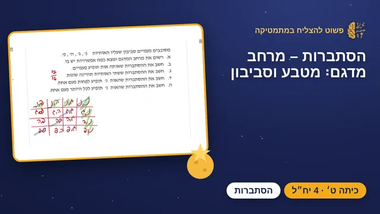
הסתברות – מרחב מדגם꞉ מטבע וסביבון הסתברות כיתה ט בסיסי ויפה
הסתברות כיתה ט בסיסי ויפההסתברות – שאלון 471 כל הנושאים של שאלון 471 ←
 הסתברות – כפתורים בקופסה, דנה ורותי (עץ ומותנה)
הסתברות – כפתורים בקופסה, דנה ורותי (עץ ומותנה) הסתברות בטבלה עם מותנה – כנס שוטרים, שופטים ועורכי דין
הסתברות בטבלה עם מותנה – כנס שוטרים, שופטים ועורכי דין הסתברות מותנית בטבלה – סקר הפסקת צהריים (שנה א׳ ושנה ב׳)
הסתברות מותנית בטבלה – סקר הפסקת צהריים (שנה א׳ ושנה ב׳) הסתברות עץ – פירות משתי מגירות והסתברות מותנית
הסתברות עץ – פירות משתי מגירות והסתברות מותנית הסתברות בטבלה עם מותנה 4-5 יח – תרגיל
הסתברות בטבלה עם מותנה 4-5 יח – תרגיל הסתברות שאלון 471 – מתכונת
הסתברות שאלון 471 – מתכונת הסתברות עץ 4-5 יח בסיסי – חלק 2
הסתברות עץ 4-5 יח בסיסי – חלק 2 הסתברות מותנית בטבלה 4-5 יח – מבחנים
הסתברות מותנית בטבלה 4-5 יח – מבחנים הסתברות בטבלה דו-ממדית – רישיון נהיגה בשכבה
הסתברות בטבלה דו-ממדית – רישיון נהיגה בשכבה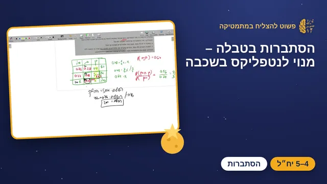
הסתברות בטבלה – מנוי לנטפליקס בשכבההסתברות בטבלה – מתנדבים בשכבות י״א-י״ב הסתברות בטבלה – דירה ומכונית, מבחנים באוניברסיטה
הסתברות בטבלה – דירה ומכונית, מבחנים באוניברסיטה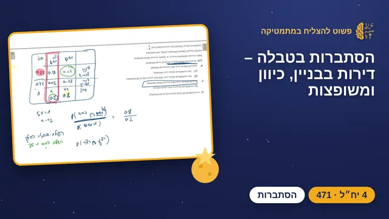
הסתברות בטבלה – דירות בבניין, כיוון ומשופצותהסתברות בסיסית – בחירה אקראית, קובייה ובולים במעטפההסתברות – עץ꞉ הטלת קובייה פעמיים וקובייה צבעוניתהסתברות – עץ꞉ בנים ובנות, מטבעות עם החזרההסתברות – מרחב מדגם꞉ מטבע וסביבון הסתברות עץ וואו 471
הסתברות עץ וואו 471 הסתברות – מתכונת שאלון 471
הסתברות – מתכונת שאלון 471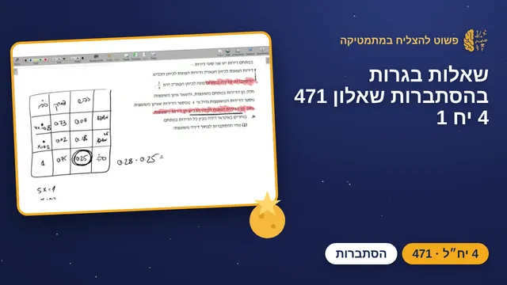
שאלות בגרות בהסתברות שאלון 471 4 יח 1 שאלות בגרות בהסתברות שאלון 471 4 יח 2
שאלות בגרות בהסתברות שאלון 471 4 יח 2 הסבר מהות הסתברות שאלון 471
הסבר מהות הסתברות שאלון 471 הסתברות שאלת בגרות 471 – חלום של שאלה
הסתברות שאלת בגרות 471 – חלום של שאלה הסתברות שאלות ברמה גבוהה 471 4 יח 1
הסתברות שאלות ברמה גבוהה 471 4 יח 1 הסתברות שאלות ברמה גבוהה 471 4 יח 2
הסתברות שאלות ברמה גבוהה 471 4 יח 2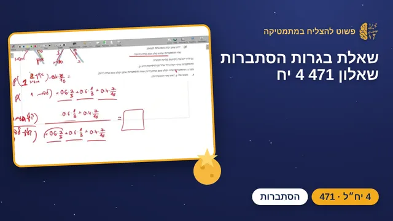
שאלת בגרות הסתברות שאלון 471 4 יח טבלה עם עץ הסתברות – שאלה טילית שאלון 471
טבלה עם עץ הסתברות – שאלה טילית שאלון 471 הסתברות טבלה עם מותנה – רמה גבוהה ביותר 471
הסתברות טבלה עם מותנה – רמה גבוהה ביותר 471 הסתברות טבלה עם מותנה – תרגילים לדוגמה 471 3
הסתברות טבלה עם מותנה – תרגילים לדוגמה 471 3 הסתברות טבלה עם מותנה – תרגילים לדוגמה 471 2
הסתברות טבלה עם מותנה – תרגילים לדוגמה 471 2 הסתברות – מהות, משמעות והסבר
הסתברות – מהות, משמעות והסבר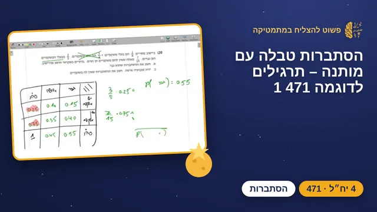
הסתברות טבלה עם מותנה – תרגילים לדוגמה 471 1 הסתברות מותנית – תרגילים לדוגמה עץ 2
הסתברות מותנית – תרגילים לדוגמה עץ 2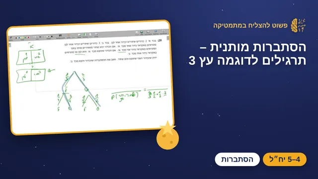
הסתברות מותנית – תרגילים לדוגמה עץ 3 הסתברות מותנית – תרגילים לדוגמה עץ 1
הסתברות מותנית – תרגילים לדוגמה עץ 1 הסתברות מותנית דיאגרמת עץ – הסבר ודוגמה
הסתברות מותנית דיאגרמת עץ – הסבר ודוגמה הסתברות עץ עם נעלם וללא החזרה 471 4 יח
הסתברות עץ עם נעלם וללא החזרה 471 4 יח הסתברות עץ עם נעלם שאלון 471 4 יחהסתברות שאלה עם נעלם – תרגיל עץ פשוט ונהדר 4 יח
הסתברות עץ עם נעלם שאלון 471 4 יחהסתברות שאלה עם נעלם – תרגיל עץ פשוט ונהדר 4 יח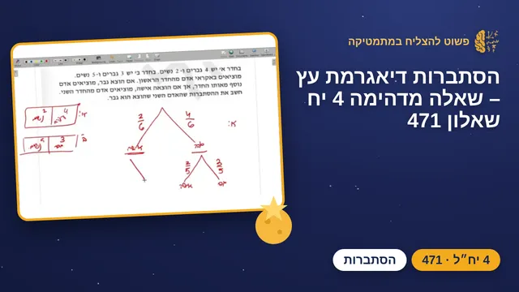
הסתברות דיאגרמת עץ – שאלה מדהימה 4 יח שאלון 471 הקונספט של נעלם בהסתברות שאלון 471
הקונספט של נעלם בהסתברות שאלון 471 הסתברות עץ עם נעלמים – תרגיל מסכם שאלון 471 4 יח
הסתברות עץ עם נעלמים – תרגיל מסכם שאלון 471 4 יח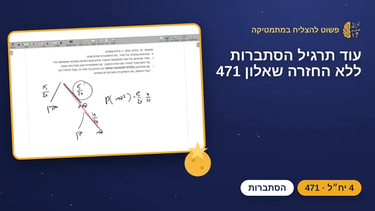
עוד תרגיל הסתברות ללא החזרה שאלון 471 הסתברות עץ ללא החזרה – הבנה טובה של הרעיון שאלון 471 4 יח
הסתברות עץ ללא החזרה – הבנה טובה של הרעיון שאלון 471 4 יח הסתברות רצף אירועים – הבסיס והרעיון שאלון 471 4 יח
הסתברות רצף אירועים – הבסיס והרעיון שאלון 471 4 יח מאורע משלים – לחשב הסתברות דרך מה שאנחנו לא רוצים 471 4 יח
מאורע משלים – לחשב הסתברות דרך מה שאנחנו לא רוצים 471 4 יח הסתברות דיאגרמת עץ תרגיל חביב ביותר 471 יא 4 יח
הסתברות דיאגרמת עץ תרגיל חביב ביותר 471 יא 4 יח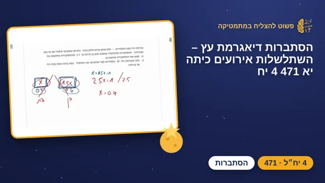
הסתברות דיאגרמת עץ – השתלשלות אירועים כיתה יא 471 4 יח הסתברות מרחב מדגם – ההיגיון שבהיגיון כיתה יא 471 4 יחהסתברות – מהות ומשמעות כולל תרגילי התחלה כיתה יא 471 4 יחשאלת הסתברות ברמה גבוהה שמקיפה את כל החומר 481 יא 4 יח
הסתברות מרחב מדגם – ההיגיון שבהיגיון כיתה יא 471 4 יחהסתברות – מהות ומשמעות כולל תרגילי התחלה כיתה יא 471 4 יחשאלת הסתברות ברמה גבוהה שמקיפה את כל החומר 481 יא 4 יח הסתברות שאלת בגרות 4 יח 481הסתברות שאלת בגרות 481הסתברות עץ וטבלה – שאלות בגרות וחזרה על כל החומר
הסתברות שאלת בגרות 4 יח 481הסתברות שאלת בגרות 481הסתברות עץ וטבלה – שאלות בגרות וחזרה על כל החומר שאלת בגרות הסתברות 4 יח 481חורף 2022 נבצרים מועד א – הסתברות שאלה 3 שאלון 481
שאלת בגרות הסתברות 4 יח 481חורף 2022 נבצרים מועד א – הסתברות שאלה 3 שאלון 481 חורף 2021 מועד א – הסתברות שאלה 3 שאלון 481
חורף 2021 מועד א – הסתברות שאלה 3 שאלון 481 קיץ 2021 מועד א – הסתברות שאלה 3 שאלון 481
קיץ 2021 מועד א – הסתברות שאלה 3 שאלון 481 הסתברות טבלה – פתרון שאלות והסברים חלק א
הסתברות טבלה – פתרון שאלות והסברים חלק א הסתברות טבלה – פתרון שאלות והסברים חלק ב כולל מותנההסתברות טבלה – פתרון שאלות והסברים חלק ג כולל מותנה עם נעלמים2023 מועד ב – הסתברות שאלה 3 481
הסתברות טבלה – פתרון שאלות והסברים חלק ב כולל מותנההסתברות טבלה – פתרון שאלות והסברים חלק ג כולל מותנה עם נעלמים2023 מועד ב – הסתברות שאלה 3 481 קיץ 2022 מועד ב – הסתברות טבלה שאלה 3
קיץ 2022 מועד ב – הסתברות טבלה שאלה 3 הסתברות עץ וטבלה כולל מותנה ושאלות בגרות – הסבר כל החומר
הסתברות עץ וטבלה כולל מותנה ושאלות בגרות – הסבר כל החומר הסתברות עץ עם נעלמים ומותנה 481 כיתה יא
הסתברות עץ עם נעלמים ומותנה 481 כיתה יאהסתברות – שאלון 571 כל הנושאים של שאלון 571 ←
הסתברות – כפתורים בקופסה, דנה ורותי (עץ ומותנה)הסתברות בטבלה עם מותנה – כנס שוטרים, שופטים ועורכי דיןהסתברות מותנית בטבלה – סקר הפסקת צהריים (שנה א׳ ושנה ב׳)הסתברות עץ – פירות משתי מגירות והסתברות מותנית הסתברות ברנולי 5 יח שאלון 571הסתברות בטבלה עם מותנה 4-5 יח – תרגילהסתברות עץ 4-5 יח בסיסי – חלק 2הסתברות מותנית בטבלה 4-5 יח – מבחניםהסתברות בטבלה דו-ממדית – רישיון נהיגה בשכבההסתברות בטבלה – מנוי לנטפליקס בשכבההסתברות בטבלה – מתנדבים בשכבות י״א-י״בהסתברות בטבלה – דירה ומכונית, מבחנים באוניברסיטה
הסתברות ברנולי 5 יח שאלון 571הסתברות בטבלה עם מותנה 4-5 יח – תרגילהסתברות עץ 4-5 יח בסיסי – חלק 2הסתברות מותנית בטבלה 4-5 יח – מבחניםהסתברות בטבלה דו-ממדית – רישיון נהיגה בשכבההסתברות בטבלה – מנוי לנטפליקס בשכבההסתברות בטבלה – מתנדבים בשכבות י״א-י״בהסתברות בטבלה – דירה ומכונית, מבחנים באוניברסיטה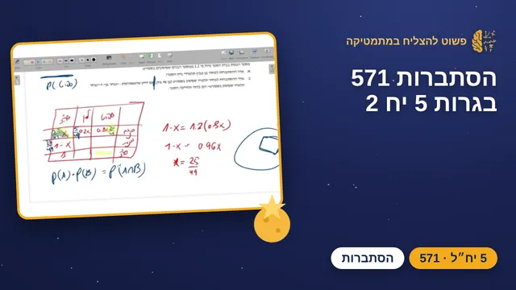
הסתברות 571 בגרות 5 יח 2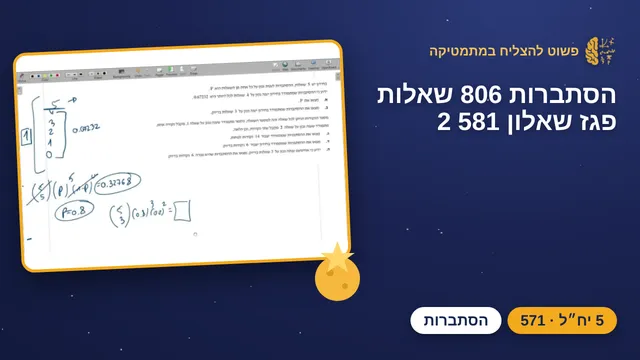
הסתברות 806 שאלות פגז שאלון 581 2הסתברות – מהות, משמעות והסברהסתברות מותנית – תרגילים לדוגמה עץ 2הסתברות מותנית – תרגילים לדוגמה עץ 3הסתברות מותנית – תרגילים לדוגמה עץ 1הסתברות מותנית דיאגרמת עץ – הסבר ודוגמה הסתברות שאלה פצצה 5 יח 581
הסתברות שאלה פצצה 5 יח 581 הסתברות שאלה 4 שאלת בגרות 5 יח 581הסתברות עץ וטבלה – שאלות בגרות וחזרה על כל החומרהסתברות טבלה – פתרון שאלות והסברים חלק אהסתברות טבלה – פתרון שאלות והסברים חלק ב כולל מותנההסתברות טבלה – פתרון שאלות והסברים חלק ג כולל מותנה עם נעלמיםקיץ 2022 מועד א – הסתברות שאלה 3 581 806
הסתברות שאלה 4 שאלת בגרות 5 יח 581הסתברות עץ וטבלה – שאלות בגרות וחזרה על כל החומרהסתברות טבלה – פתרון שאלות והסברים חלק אהסתברות טבלה – פתרון שאלות והסברים חלק ב כולל מותנההסתברות טבלה – פתרון שאלות והסברים חלק ג כולל מותנה עם נעלמיםקיץ 2022 מועד א – הסתברות שאלה 3 581 806 קיץ 2021 מועד א – הסתברות שאלה 3 581 806קיץ 2022 מועד ב – הסתברות טבלה שאלה 3הסתברות עץ וטבלה כולל מותנה ושאלות בגרות – הסבר כל החומר
קיץ 2021 מועד א – הסתברות שאלה 3 581 806קיץ 2022 מועד ב – הסתברות טבלה שאלה 3הסתברות עץ וטבלה כולל מותנה ושאלות בגרות – הסבר כל החומר